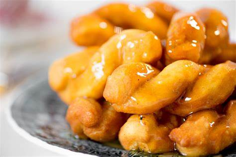

Koeksisters

Prep Time: 30 mins
Yield: 10 servings
Ingredients:
- 2 cups flour
- 2 teaspoons baking powder
- Pinch of salt
- 1/2 cup milk
- 1 egg
- 2 tablespoons butter, melted
- Oil for frying
- Sugar syrup for coating
Steps:
- Mix flour, baking powder, and salt.
- Add milk, egg, and melted butter, kneading until smooth.
- Roll out and cut dough into strips, twisting into braids.
- Deep-fry in hot oil until golden brown.
- Dip into chilled sugar syrup while warm.
- Serve and enjoy!